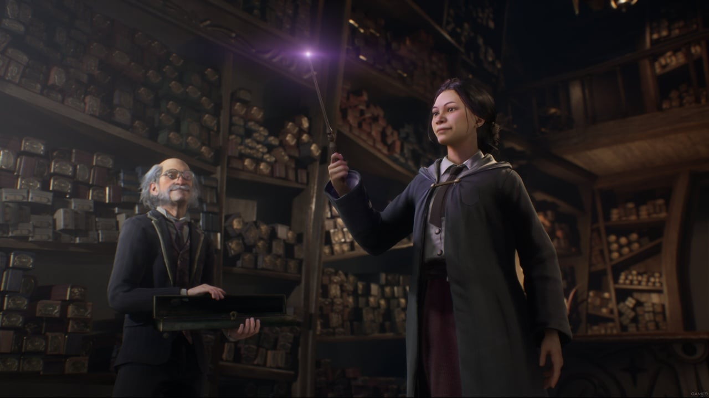

Hogwarts Legacy
v 1117238 build 10461750 + DLC - Digital Deluxe Edition [Новая Версия] на РусскомДата выхода: 10 фев. 2023 г.
Разработчик: Portkey Games
Жанр: Экшены, Приключения, RPG
Hogwarts Legacy - ролевая игра по мотивам знаменитых книг о мальчике-волшебнике "Гарри Поттер". События Хогвартс: Наследие развиваются задолго до рождения главного героя книг и фильмов. История берет свое начало в XIX веке, а именно в 1800-х годах. Действие игры развивается в той же вселенной и в той же школе, поэтому поклонники оригинальной саги найдут множество отсылок и встретят некоторых знакомых персонажей.
Игровой процесс вдохновлен серией Persona. Днем герой может посещать уроки, исследовать огромную школу магов, общаться с персонажами, разгадывать секреты поместья и сражаться с фантастическими существами. Местный опенворлд - это огромное учебное заведение, которое хранит в себе множество тайн, скрытых проходов, закрытых помещений и т.д. В Hogwarts Legacy можно выходить из здания и исследовать локации поблизости.
Перед началом игры вам предстоит создать собственного героя. Поступив на обучение в магическую школу, выясняется, что протагонист способен обуздать древнюю магию. Геймплей выделяется нелинейностью. В процессе прохождения вам предстоит решить, раскроете ли вы свою тайну или же сохраните свои способности в секрете, обучаясь темным чарам. Однако следует помнить о том, что в зависимости от ваших решений меняется сюжет, влияющий на судьбу многих персонажей.
Скриншоты из игры
